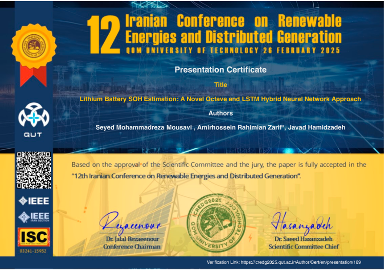
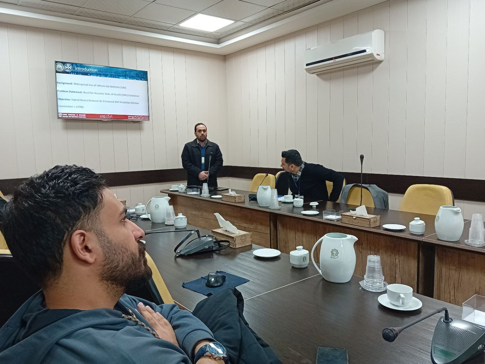
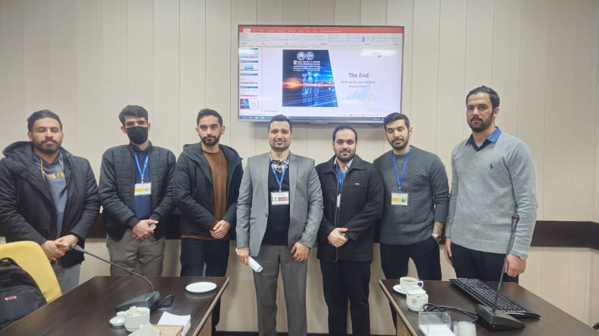

Certificates
IEEE Certificate – 12th Iranian Conference on Renewable Energies and Distributed Generation
Presented at the 12th Iranian Conference on Renewable Energies and Distributed Generation at Qom University of Technology (Feb 2025), our paper on Lithium Battery SOH Estimation using a Hybrid Octave and LSTM Network was officially accepted. The presentation was honored with an IEEE-recognized certificate. The event was a great platform to share insights on battery health estimation and deep learning-based energy applications.


